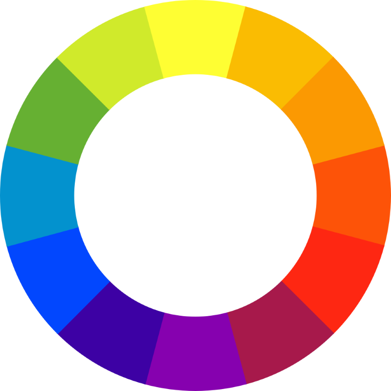

Čo sú farby?
Farby sú to, čo vidíme, keď svetlo dopadá na predmety a odráža sa do našich očí. Všetky farby, ktoré vidíme, môžeme vytvoriť zmiešaním troch základných farieb: červenej, zelenej a modrej. Tieto farby sa nazývajú primárne farby. (to sú primárne farby aditívne, ešte existujú aj subtraktívne primárne farby)
Ako vnímame farby?
V našich očiach sú špeciálne bunky nazývané čapíky, ktoré sú citlivé na rôzne farby. Keď svetlo dopadne na sietnicu, čapíky premenia svetelné vlny na elektrické signály, ktoré náš mozog interpretuje ako farby.
Základné farby
- Červená
- Zelená
- Modrá
Sekundárne farby
- Azúrová (modrá + zelená)
- Purpurová (červená + modrá)
- Žltá (červená + zelená)
Farebný kruh
Farebný kruh je vizuálne znázornenie vzťahov medzi farbami. Ukazuje, ako farby spolu súvisia a ako ich môžeme kombinovať.
Tabuľka farieb
| Farba | Teplá/Studená | Psychologické účinky | Spojitosti | Hexadecimálny kód | Farebná vzorka |
|---|---|---|---|---|---|
| Červená | Teplá | Energia, vášeň, vzrušenie, pozornosť | Upozornenia, výpredaje, láska | #ff0000 | |
| Oranžová | Teplá | Entuziazmus, šťastie, priateľstvo | Jesenné farby, jedlo, zábava | #ff6400 | |
| Žltá | Teplá | Šťastie, optimizmus, inteligencia | Slnko, citróny, deti | #ffff00 | |
| Modrá | Studená | Kľud, dôvera, stabilita, pokoj | Obloha, more, korporátny dizajn | #0000ff | |
| Fialová | Studená | Kráľovstvo, luxus, kreativita, múdrosť | Luxusné značky, umelecké diela | #7b00ff | |
| Zelená | Studená/neutrálna | Príroda, rast, harmónia, obnova | Listy, tráva, ekológia | #00c819 | |
| Farby majú silný vplyv na naše vnímanie a emócie. Ich správne použitie môže zlepšiť komunikáciu a dizajn. | |||||